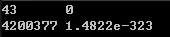
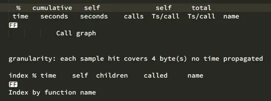
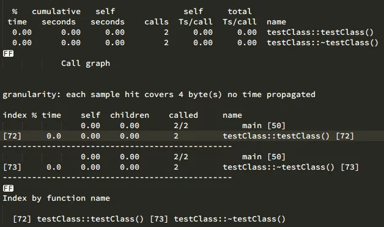
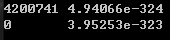
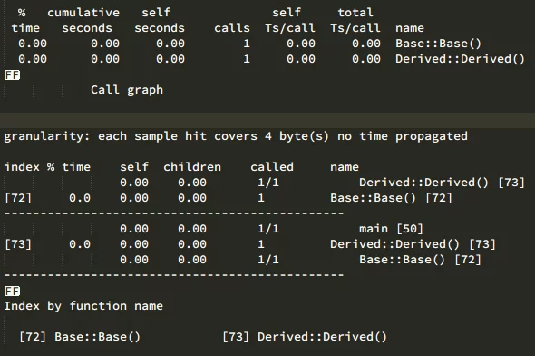
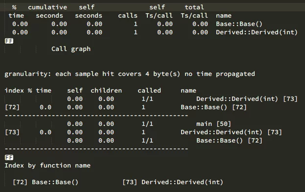
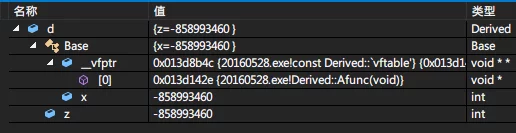
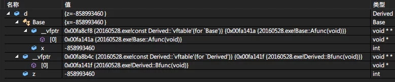

当我们编写的一个类没有显式提供构造函数但编译器需要构造函数时(一定要注意这句话)，编译器会为我们生成一个。
但是编译器生成的默认构造函数与我们假想其可以完成的行为并不一致。
下面来详细分析一下。
1 | class testClass{ |
运行结果：

上面的代码中我们并没有显式地定义一个默认构造函数，我们期望于编译器为我们生成一个默认构造函数，但是，编译器对于这种需求并不是随时都会合成一个默认构造函数。很显然，上面的代码并不会为我们生成默认构造函数。
这点通过gprof可以看出来:

那么什么时候编译器才会为我们生成一个默认构造函数？当编译器需要它的时候！
在我们上面定义的testClass类的代码中，我们所期望编译生成的动作(为两个成员变量初始化)并不是编译器需要的，而是程序需要的，所以我们不能依赖于编译器实现程序所需要的操作，程序需要的操作应该依赖于程序员实现而不是依赖于编译器。
那么，究竟什么时候编译器需要生成一个默认构造函数呢？
有下面四种情况:
- 带有Default Constructor的Member Class Object
- 带有Default Constructor的Base Class
- 带有virtual Function的Class
- 带有virtual Base Class的Class
首先我们一点一点来测试吧:
带有默认构造函数的成员类对象
我们定义一个string类，并在testClass中增加一个string的成员。
1 | class testClass{ |
然后再编译运行我们创建并输出所有成员的代码，并用gprof分析编译器是否为我们生成了一个默认构造函数：

可以看到编译器自动为我们生成了一个默认构造函数，但是，对于类的其他成员，仍然不会初始化，我们读取testClass中两个成员的值依旧是未定义的结果:

带有默认构造函数的基类
如果一个类没有任何构造函数的类派生自一个具有Default Constructor的Base Class，那么编译器会为其生成一个默认构造函数。
生成的派生类默认构造函数将会调用基类的默认构造函数来初始化从基类中派生而来的成员。
1 | class Base{ |
下面写份代码测试一下编译器是否会为Derived生成一个默认构造函数：
1 | int main(int argc,char* argv[]){ |
我们编译并用gprof来分析：

如果类提供了构造函数，但是没有提供默认构造函数，编译器不会为其生成默认构造函数了，但是会扩充每一个构造函数，将“用以调用默认构造函数”的代码插入进去。
1 | class Base{ |
在这种情况下，编译器不会为Derived生成默认构造函数了，但是会自动将Base的构造函数插入到Derived的构造函数中，以正确初始化从Base类继承来的两个成员x和y。
1 | int main(int argc,char* argv[]){ |
下面我们再通过编译和gprof来验证一下：

如图所示，Base的默认构造函数仍然会被执行。我们之前的预测是正确的。
带有Virtual Function(虚函数)的类
在关于类中Virutal Function以下两种情况中，编译器会合成一个默认构造函数：
- Class声明(或继承)一个Virtual Function.
- Class类派生自一个继承串链，其中有一个或者更多的Virtual Base Clsses
不管是哪一种情况，由于缺乏用户自定义的构造函数，编译器会详细记录合成一个默认构造函数必要的信息。
代码如下:
1 | class Base { |
有两个扩张行为会在编译期间发生：
- 一个virtual function table(虚函数表)会被编译器生成出来，内放Class的virtual function的地址(函数指针的地址)
- 每一个Class Object中有一个额外的Pointer Member(也就是vptr)会被编译器生成出来，内放指向下虚函数表的指针。
使用Visual Studio来分析更直观一些：

我们可以看到现在Derived类对象b中包含的所有成员(类中没有定义static成员和non-virtualFunction所以static和non-virtualFunction的东西先按下不表)。
对象b中包含了
- 一个Base的完整对象：数据成员x和Base的virtual function table，其中具有一个指向Derived::func()的指针
- 一个在b中定义的Data Member(数据成员)z。
假如我们使用b对象来调用func：
1 | b.func(); |
则该代码可以正确执行的前提是，编译器必须为对象b的vptr设定初始值，放置适当的virtual Table地址，对于类所定义的每一个的构造函数，编译器都会安插一些必要的代码来实现这个行为。
对于那些没有声明任何构造函数的类，编译器会为他们合成一个默认构造函数，以便正确的初始化每一个类对象的vptr。
需要注意的是，C++标准并没有要求虚表必须为一个。如果我们将Derived中再声明一个vitual函数并将Base设置为虚继承，Visual Studio会在继承关系中产生多个Virtual Function Table，但是其他的编译器却不一定会这样，有的编译器在实现Virtual Function Table的时候会将多个虚表合并成一个，这个一定要注意。

带有一个virtual Base Class的Class
Virtual Base Table的实现法在不同的编译器之间有极大的差异。然而，每一种实现法的共同点在于必须使Virtual base class在其中每一个derived class object中的位置能由于执行期准备妥当。
1 | class X{public:int i;}; |
上面的代码中，编译器无法固定住foo()之中”经由pa而存取X::i”的实际偏移位置，因为pa的真正类型可以改变(多态性)。编译器必须改变“执行存取操作”的那些代码，使X::i可以延期至执行期才决定下来。
编译器实现的方式为：在Derived class object的每一个virtual base classes中安插一个指针。通过该指针，所有经由引用或指针来存取一个virtual base class的操作够可以通过一个相关指针来完成。
例如上面foo()的代码在运行时有可能会被改写成下面这样:
1 | void foo(const A* pa){ |
在类对象中安插指针或者编译器所作出的其他什么东西，是在类对象构造期间完成的。
对于类所定义的每一个构造函数，编译器会安插那些“允许virtual base class执行期间存取操作“的代码。如果类没有声明任何构造函数，编译器必须为它合成一个默认构造函数。
在编译器合成的默认构造函数中，只有
基类子对象(Base class subobjects)和成员类对象(Member class objects)会被初始化。其他所有的非static数据成员(nonstatic data member)(如整数，指针，数组等等)都不会被初始化，这些初始化对于程序而言是需要的，但是对于编译器而言却不是必要的，所以编译器生成的默认构造函数不会初始化他们。如果程序需要初始化一个非static的内置类型数据成员，那么提供这个操作的应该是类的实现者(程序猿们)，而不应该依赖于编译器。